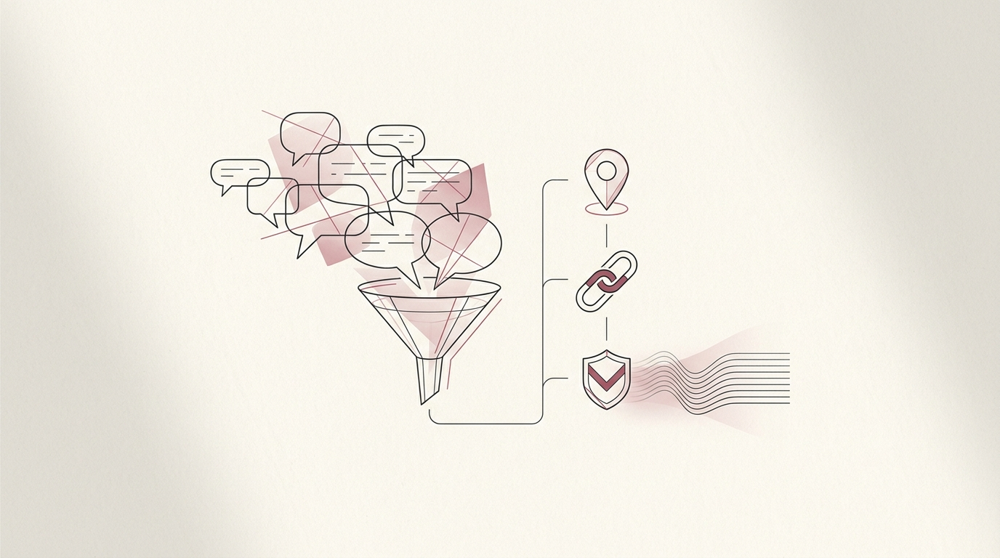

Uni Chat Monitor
Local AI · Self-hostedMy noisy uni group chat, quietly read by a local AI that pulls out the deadlines and lets me search the rest.

A university Messenger group is a firehose — announcements, deadlines and links buried under hundreds of off-topic messages. This is a fully self-hosted watcher that reads the chat, keeps the signal, and throws away the noise — all on my own machine.
The problem
Important things — a moved deadline, a submission link, a room change — get posted once and then immediately buried. Scrolling back to find them is the worst, and missing them is expensive. I wanted something that read the chat so I didn't have to.
The pipeline
Messenger doesn't have a friendly API, so the chat is bridged into open infrastructure first:
- Bridge —
mautrix-metabridges the Facebook Messenger group into a Matrix room on a self-hosted Synapse server. - Understand — a Python bot listens to that room, classifies each message, and extracts deadlines, links and announcements with a local LLM.
- Remember — everything is embedded into ChromaDB, and the bot posts a daily summary of what mattered.
- Show — a FastAPI + React dashboard surfaces the extracted info and search.
Ask it anything
Because every message is embedded in a local vector database, the chat becomes queryable. Ask "when's the database assignment due?" and a local Ollama model answers from the actual messages — retrieval-augmented over the group history, no cloud involved.
Private by design
The whole stack runs in a Podman pod that shares a dedicated Tailscale node's network namespace. Nothing listens on the host — zero ports exposed — and I reach the dashboard from my phone over the tailnet at http://uni-chat:8080 via MagicDNS, with ACLs controlling who else can. My machine's own Tailscale identity stays untouched.
Built with
Python bot (classification, extraction, daily summaries, RAG), mautrix-meta + Synapse for the Messenger→Matrix bridge, Ollama for the local LLM, ChromaDB for vector storage, FastAPI + React for the dashboard, and Tailscale + Podman for zero-exposure self-hosting.